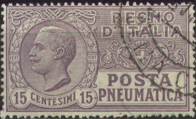
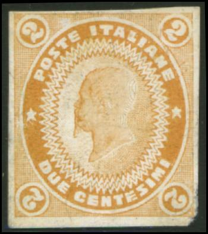
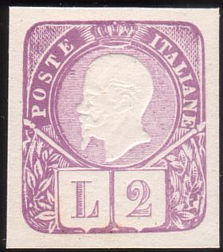

Note: on my website many of the
pictures can not be seen! They are of course present in the
catalogue;
contact me if you want to purchase the catalogue.

10 c brown (1913) 15 c lilac (1922) 15 c red (1927) 20 c lilac (1926) 30 c blue (1923) 35 c red (1927) 40 c red (1926)
These stamps have watermark 'Crown' and perforation 14.
Value of the stamps |
|||
vc = very common c = common * = not so common ** = uncommon |
*** = very uncommon R = rare RR = very rare RRR = extremely rare |
||
| Value | Unused | Used | Remarks |
| 10 c | * | * | |
| 15 c lilac | c | c | |
| 15 c red | c | c | |
| 20 c | * | * | |
| 30 c | * | * | |
| 35 c | * | * | |
| 40 c | * | * | |
Surcharged

15 c on 10 c brown (1923) 15 c on 20 c lilac (1927) 20 c on 10 c brown (1924) 20 c on 15 c lilac (1924) 35 c on 40 c red (1927) 40 c on 30 c blue (1924)
Value of the stamps |
|||
vc = very common c = common * = not so common ** = uncommon |
*** = very uncommon R = rare RR = very rare RRR = extremely rare |
||
| Value | Unused | Used | Remarks |
| 15 c on 10 c | c | * | |
| 15 c on 20 c | c | * | |
| 20 c on 10 c | * | * | |
| 20 c on 15 c | * | * | |
| 35 c on 40 c | c | * | |
| 40 c on 30 c | * | * | |

15 c lilac (Dante) 35 c red (Galileo Galilei) Without fasces (1945)
60 c brown (Dante) 1.40 L blue (Galileo Galilei)
3 L lilac 5 L blue

1.25 L green 2.50 L orange
1.25 L with 'P.M.' overprint
The 1.25 L stamp exists with overprint 'P.M.' (= Posta Militare', military stamp). These stamps with overprint 'Deutsche Besetzung Zara' were issued for Zara.
Zara issue
5 L red

5 L red (foot with wings) 10 L blue (man with horse) 15 L red (design as 10 L) 25 L orange (design as 5 L) 30 L violet (design as 5 L) 50 L lilac (design as 5 L) 60 L red (design as 10 L) 75 L lilac (Etruscian horses with wings, 1958) 150 L green (design as 75 L) 250 L blue (design as 75 L) 300 L brown (design as 75 L)
The 10 L and 30 L stamps exist with overprint 'A.M.G. V.G.' (Venezia Guilia). Other values exist with 'A.M.G. F.T.T.' or 'AMG-FTT' to be used in Trieste.
'AMG-FTT' overprints used in Trieste

10 c brown 20 c red 25 c green 30 c brown 50 c violet
Two types of overprints exist, the first one is very rare (only 200 stamps issued), the second type is less rare (except the 15 c of which only 50 stamps were issued). Forgeries are quite common of these overprints.
Stamps from the imperial set (with fasces) 5 c brown 10 c brown 15 c green 20 c red 25 c green 30 c brown 50 c violet 1 L violet 1.25 L blue 1.75 L red 2 L red 5 L red 10 L violet On airmail stamps of 1930
50 c brown 1 L violet 2 L blue 5 L green 10 L red On airmail Express stamp, inscription 'ITALIA POSTA AEREA ESPRESSO' 2 L grey On express stamp of 1932
1.25 L green

kg 1 brown
10 c blue
This stamp exists with overprint 'LIBIA'.
10 c brown 40 c brown (1945) 1 L brown (1945) Surcharged '40' on 10 c brown
Overprinted with an axe to be used in the Italian Socialist
Republic (1944)

The 10 c exists with 'ERITREA' overprint
(1941), it also exists with 'LIBIA' and 'TRIPOLITANIA' overprint.
The 1 L value exists with overprint 'A.M.G. F.T.T.' (for use in Trieste).

Large size 1 L blue 8 L red Smaller size (1949-1965) 15 L violet 20 L lilac 30 L green
The 15 L and 20 L values exist with overprint 'AMG-FTT' (one line); and the 8 L and 15 L with 'A.M.G. F.T.T' (two lines) overprint (for use in Trieste).
10 c yellow
Genuine stamps should be perforated 14 and have watermark 'Crown'.
Value of the stamps |
|||
vc = very common c = common * = not so common ** = uncommon |
*** = very uncommon R = rare RR = very rare RRR = extremely rare |
||
| Value | Unused | Used | Remarks |
| 10 c | ** | *** | |
Forgery of a 'BIGLIETTI DI RICOGNIZIONE POSTALE':
Imperforate forgery, reduced size
I've also seen modern perforated forgeries, in which the design is made out of small photographic dots.
King Victor Emanuel II
A postcard with the image of King Victor Emanuel II surrounded by pearls exists (no inscription, no value), similar to the one of King Humbert (see next images). I've seen it in two shades of brown: dark brown and redbrown. Sorry, no picture available yet.
King Humbert


Postcards exist with King Humbert surrounded by pearls (no inscription and no value). Furthermore a 7 1/2 c red and a 10 c red (see images above). Other postal stationary exists (money transfer cards) with the image of King Humbert.
I've been told that the next stamp is an essay of 1862:

I've also seen this essay in the colour violet (also 2 c).

So-called 'Essay Bigola' of the 1863 issue, 15 c red, I've seen
this same essay in grey and blue (both 15 c)

Essay Grazioli of the 1863 issue; I've also seen the values 10 c
red, 10 c brown and 10 c black on green.


More essays of the 1863 issue, I've seen the 40 c in the colour
green and the 60 c in the colour black on yellow.
A 'Wentch-Essay' of the 1863 issue
Modern forgeries exist of some essays.
Label with inscription 'TELEGRAFI DELLO STATO' in blue (no value indicated):
{kind=link}
{kind=link}
{kind=link}
{kind=link}